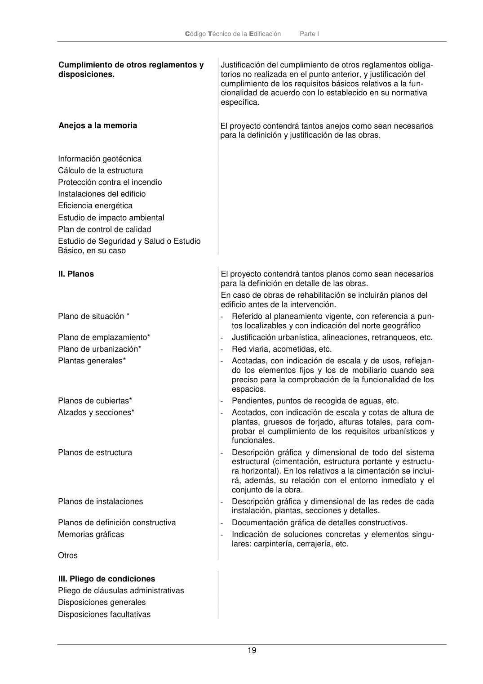
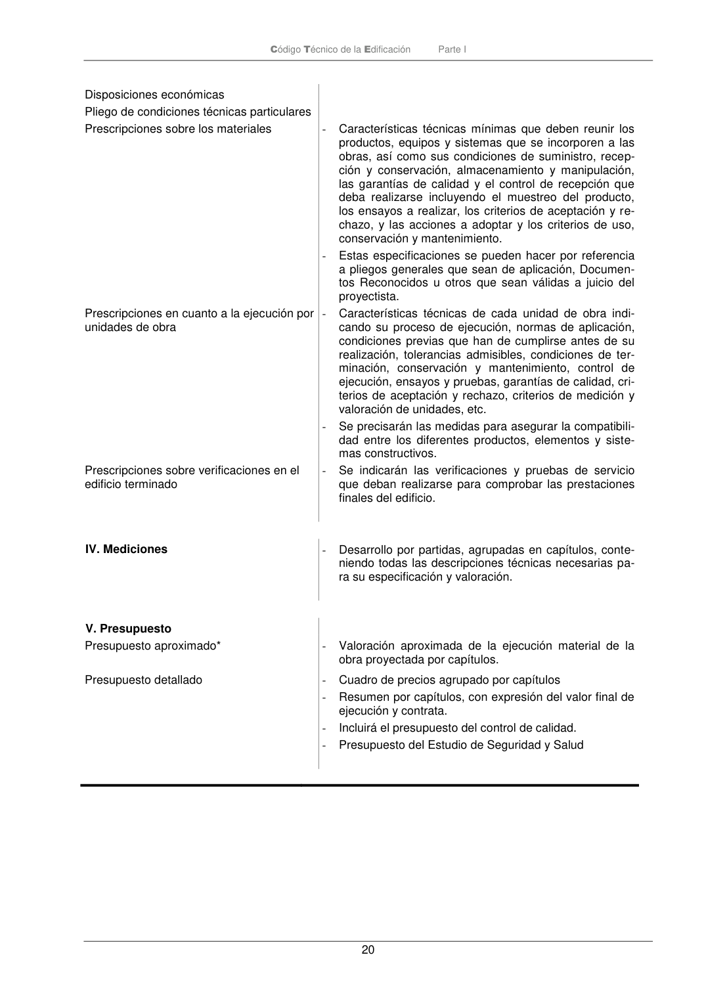

PARTE-I · Fragmento de PDF p19 · versión 2022-06-14 · capa oficial
Formatos: JSON compacto · Markdown · PDF fuente
Ámbito del documento · texto del ámbito · documento y tablas
ID técnico a0098 · PDF pág. 19-20 · jerarquía no validada por persona · no es capítulo: sin_linea_de_encabezado · padre: raíz · literal original en el contenido: «Disposiciones generales Disposiciones facultativas»
Disposiciones generales Disposiciones facultativas Disposiciones facultativas Código Técnico de la Edificación Parte I 20


PDF fuente redistribuible: copia fiel enlazada en esta página (SHA256 verificado).